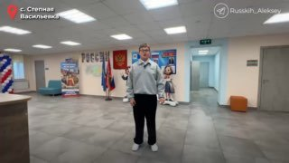

01
Общество и городская среда · событие дня
65 ребят теперь учатся в новых комфортных условиях! ✅ Работы шли в два этапа
✅ Работы шли в два этапа: в 2025 году мы обновили отмостку здания, а в 2026 провели полную реконструкцию. Заменили кровлю, все инженерные системы, включая отопление, водоснабжение, электрику и канализацию. Обновили пищеблок, столовую и спортзал. ✅ По-новому оснастили и учебные классы.…